GGPlot and Visualizations
Dr. Ayse D. Lokmanoglu Lecture 3, (B) Feb 4, (A) Feb 9
Lecture 3 Table of Contents
| Section | Topic |
|---|---|
| 1 | Introduction to ggplot2 |
| 1.1 | The Grammar of Graphics |
| 1.2 | Basic ggplot Structure |
| 2 | Geoms: Types of Graphs |
| 2.1 | Common Geoms Overview |
| 2.2 | Scatter Plots (geom_point()) |
| 2.3 | Line Plots (geom_line()) |
| 2.4 | Bar Charts (geom_bar(), geom_col()) |
| 2.5 | Histograms (geom_histogram()) |
| 2.6 | Box Plots (geom_boxplot()) |
| 3 | Aesthetics |
| 3.1 | Mapping vs. Setting Aesthetics |
| 3.2 | Color, Fill, and Alpha |
| 3.3 | Size, Shape, and Linetype |
| 4 | Labels and Annotations |
| 4.1 | Adding Labels with labs() |
| 4.2 | Adding Text and Annotations |
| 5 | Scales and Axes |
| 5.1 | Customizing Continuous Scales |
| 5.2 | Customizing Discrete Scales |
| 5.3 | Date Scales |
| 5.4 | Color Scales |
| 6 | Themes |
| 6.1 | Built-in Themes |
| 6.2 | Customizing Theme Elements |
| 6.3 | External Themes (ggthemes) |
| 7 | Facets |
| 7.1 | facet_wrap() |
| 7.2 | facet_grid() |
| 7.3 | Customizing Facet Labels |
| 8 | Color Palettes |
| 8.1 | Manual Colors |
| 8.2 | ColorBrewer |
| 8.3 | Viridis |
| 8.4 | Fun Palettes (wesanderson, NatParksPalettes) |
R Exercises
ALWAYS load our libraries first
library(tidyverse)
library(ggplot2)
library(lubridate)1. Introduction to ggplot2
1.1 The Grammar of Graphics
ggplot2 is a powerful visualization package that follows the Grammar of Graphics - a systematic approach to building plots layer by layer.
Core Components:
| Component | Description | Example |
|---|---|---|
| Data | The dataset you’re plotting | data = mtcars |
| Aesthetics | Mappings between data and visual properties | aes(x = wt, y = mpg) |
| Geometries | The type of plot | geom_point(), geom_bar() |
| Scales | Control how data maps to visual properties | scale_x_continuous() |
| Facets | Split data into panels | facet_wrap(~ cyl) |
| Themes | Control non-data elements | theme_minimal() |
1.2 Basic ggplot Structure
Every ggplot follows this basic structure:
ggplot(data = <DATA>, aes(<MAPPINGS>)) +
<GEOM_FUNCTION>() +
<OPTIONAL_LAYERS>Create a sample dataset:
df <- data.frame(
Movie_Title = c(
"YOLO", "Successor", "Pegasus 2", "Deadpool & Wolverine", "Moana 2",
"The Hidden Blade", "Avatar: The Spirit Returns"
),
Release_Date = c(
"January 2024", "February 2024", "March 2024", "July 2024",
"November 2024", "April 2024", "December 2024"
),
China_Box_Office_Gross = c(
479597304, 469612890, 466930272, 450000000, 350000000, 320000000, 550000000
),
US_Box_Office_Gross = c(
310000000, 280000000, 290000000, 438000000, 221000000, 75000000, 600000000
),
Total_Worldwide_Gross = c(
479597304, 469612890, 466930272, 850000000, 421000000, 400000000, 1300000000
)
)Basic scatter plot:
ggplot(data = df, aes(x = China_Box_Office_Gross, y = US_Box_Office_Gross)) +
geom_point()
2. Geoms: Types of Graphs
2.1 Common Geoms Overview
| Geom Function | Description | Key Aesthetics |
|---|---|---|
geom_point() |
Scatter plot | x, y, color, size, shape |
geom_line() |
Line plot | x, y, color, linetype |
geom_bar() |
Bar chart (counts) | x, fill |
geom_col() |
Bar chart (values) | x, y, fill |
geom_histogram() |
Histogram | x, fill, bins |
geom_boxplot() |
Box plot | x, y, fill |
geom_smooth() |
Trend line | x, y, method |
geom_text() |
Add text | x, y, label |
Additional Geoms:
| Geom Function | Description |
|---|---|
geom_area() |
Area under a line |
geom_violin() |
Violin plot |
geom_density() |
Density curve |
geom_tile() |
Heatmap tiles |
geom_segment() |
Line segments |
geom_abline() |
Reference line (slope/intercept) |
geom_hline() |
Horizontal reference line |
geom_vline() |
Vertical reference line |
2.2 Scatter Plots (geom_point())
# Basic scatter plot
ggplot(data = mtcars, aes(x = wt, y = mpg)) +
geom_point() +
labs(
title = "Fuel Efficiency vs. Weight",
x = "Weight (1000 lbs)",
y = "Miles Per Gallon"
)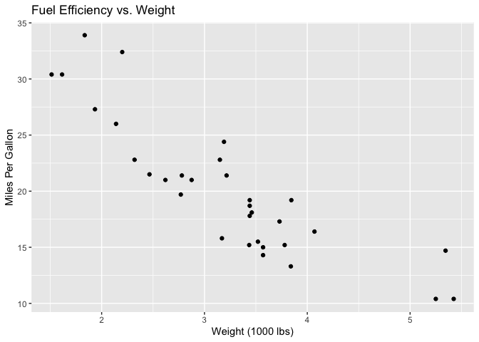
With color mapping:
ggplot(data = mtcars, aes(x = wt, y = mpg, color = factor(cyl))) +
geom_point(size = 3) +
labs(
title = "Fuel Efficiency by Weight and Cylinders",
x = "Weight (1000 lbs)",
y = "Miles Per Gallon",
color = "Cylinders"
)
2.3 Line Plots (geom_line())
# Create time series data
time_data <- data.frame(
month = 1:12,
sales = c(100, 120, 115, 130, 145, 160, 155, 170, 180, 175, 190, 210)
)
ggplot(time_data, aes(x = month, y = sales)) +
geom_line(color = "steelblue", size = 1) +
geom_point(color = "steelblue", size = 2) +
labs(
title = "Monthly Sales Trend",
x = "Month",
y = "Sales"
)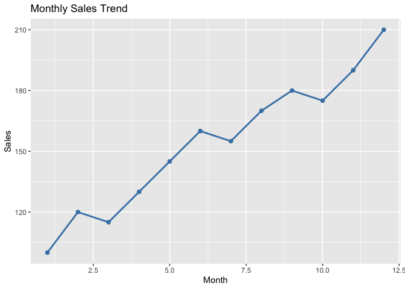
2.4 Bar Charts (geom_bar() and geom_col())
geom_bar() - counts observations (stat = “count”)
ggplot(mtcars, aes(x = factor(cyl))) +
geom_bar(fill = "steelblue") +
labs(
title = "Count of Cars by Cylinder",
x = "Cylinders",
y = "Count"
)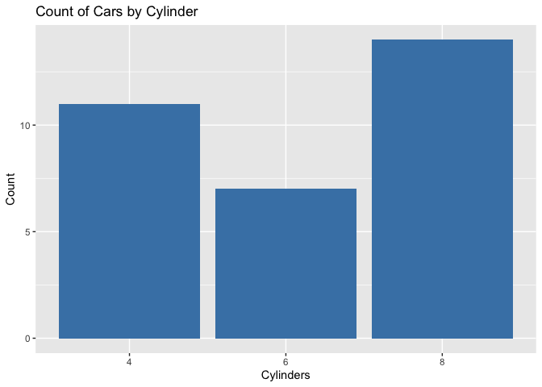
geom_col() - uses values directly (stat = “identity”)
ggplot(df, aes(x = Movie_Title, y = Total_Worldwide_Gross)) +
geom_col(fill = "steelblue") +
labs(
title = "Worldwide Gross by Movie",
x = "Movie",
y = "Gross ($)"
) +
theme(axis.text.x = element_text(angle = 45, hjust = 1))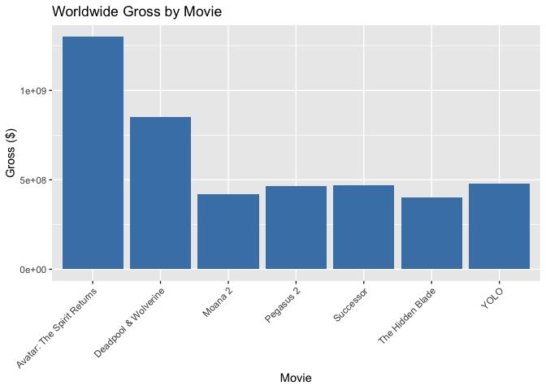
Flip coordinates for horizontal bars:
ggplot(df, aes(x = Movie_Title, y = Total_Worldwide_Gross)) +
geom_col(fill = "steelblue") +
coord_flip() +
labs(
title = "Worldwide Gross by Movie",
x = "Movie",
y = "Gross ($)"
)
2.5 Histograms (geom_histogram())
ggplot(mtcars, aes(x = mpg)) +
geom_histogram(binwidth = 2, fill = "steelblue", color = "white") +
labs(
title = "Distribution of MPG",
x = "Miles Per Gallon",
y = "Count"
)
2.6 Box Plots (geom_boxplot())
Box plots show distribution and outliers: - Box: Interquartile range (IQR) - middle 50% of data - Line in box: Median - Whiskers: Extend to 1.5 × IQR - Points: Outliers beyond whiskers
ggplot(mtcars, aes(x = factor(cyl), y = mpg, fill = factor(cyl))) +
geom_boxplot() +
labs(
title = "MPG Distribution by Cylinders",
x = "Cylinders",
y = "Miles Per Gallon"
) +
theme(legend.position = "none")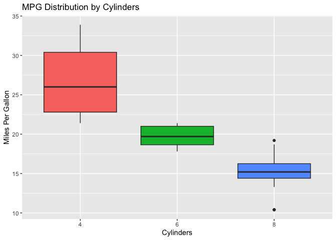
Add jittered points to show actual data:
ggplot(mtcars, aes(x = factor(cyl), y = mpg, fill = factor(cyl))) +
geom_boxplot(outlier.shape = NA) +
geom_jitter(width = 0.2, alpha = 0.5) +
labs(
title = "MPG Distribution by Cylinders",
x = "Cylinders",
y = "Miles Per Gallon"
) +
theme(legend.position = "none")
Class Exercise: Basic Plots
Using the mtcars dataset:
- Create a scatter plot of
hp(horsepower) vsmpg(miles per gallon). - Create a bar chart showing the count of cars by number of gears (
gear). - Create a histogram of
hpwith 10 bins. - Create a boxplot of
mpggrouped bygear.
### Your workspace3. Aesthetics
3.1 Mapping vs. Setting Aesthetics
A critical distinction! There’s an important difference between mapping a variable to an aesthetic and setting an aesthetic to a fixed value.
Mapping (inside aes()) - connects a variable to a visual property:
# Color varies BY the data (each cylinder group gets a different color)
ggplot(data = mtcars, aes(x = wt, y = mpg, color = factor(cyl))) +
geom_point(size = 4)
Setting (outside aes()) - applies a fixed value to all points:
# ALL points are purple
ggplot(data = mtcars, aes(x = wt, y = mpg)) +
geom_point(size = 4, color = "purple")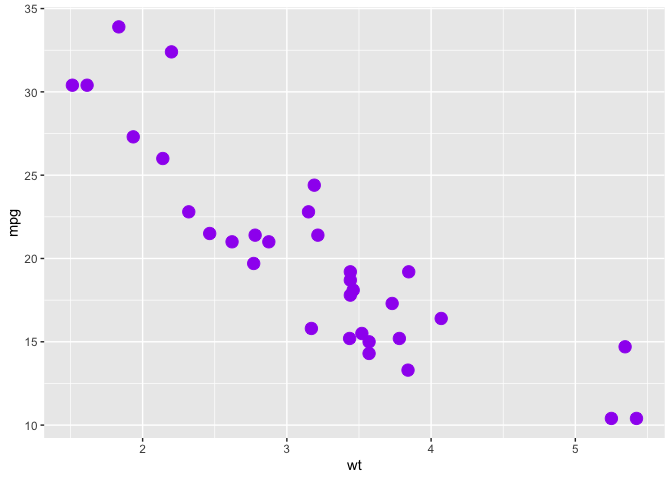
Common Error: What happens if you put a fixed value inside aes()?
# WRONG! This creates a weird legend
ggplot(data = mtcars, aes(x = wt, y = mpg, color = "purple")) +
geom_point(size = 4)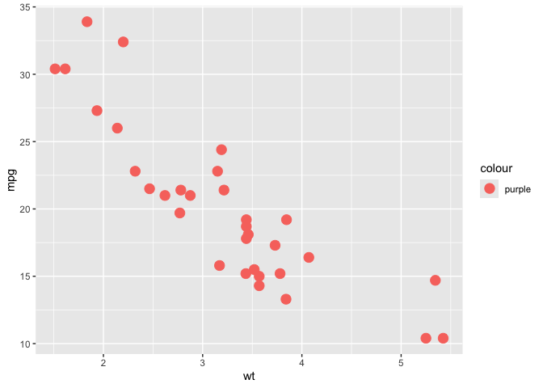
R thinks “purple” is a variable name, recycles it for every row, and picks its default color (salmon) — not what you wanted!
3.2 Color, Fill, and Alpha
| Aesthetic | Description | Used With |
|---|---|---|
color |
Outline/line color | Points, lines, text |
fill |
Interior color | Bars, boxes, areas |
alpha |
Transparency (0-1) | All geoms |
# color vs fill
ggplot(mtcars, aes(x = factor(cyl), y = mpg)) +
geom_boxplot(color = "darkblue", fill = "lightblue", alpha = 0.7)
3.3 Size, Shape, and Linetype
Point Shapes:
| Shape Integer | Shape Name | Visualization |
|---|---|---|
| 0 | square open | □ |
| 1 | circle open | ○ |
| 2 | triangle open | △ |
| 15 | square filled | ■ |
| 16 | circle filled | ● |
| 17 | triangle filled | ▲ |
| 18 | diamond filled | ◆ |
# Multiple aesthetics
ggplot(mtcars, aes(x = wt, y = mpg,
color = factor(cyl),
size = hp,
shape = factor(gear))) +
geom_point(alpha = 0.7) +
labs(
color = "Cylinders",
size = "Horsepower",
shape = "Gears"
)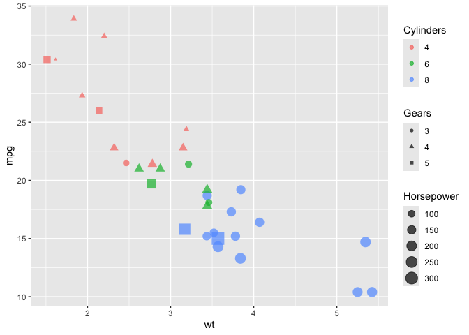
Line Types:
# Different line types
df_lines <- data.frame(
x = rep(1:5, 3),
y = c(1:5, 2:6, 3:7),
group = rep(c("A", "B", "C"), each = 5)
)
ggplot(df_lines, aes(x = x, y = y, linetype = group, color = group)) +
geom_line(size = 1) +
labs(title = "Different Line Types")
4. Labels and Annotations
4.1 Adding Labels with labs()
ggplot(mtcars, aes(x = wt, y = mpg, color = factor(cyl))) +
geom_point(size = 3) +
labs(
title = "Fuel Efficiency by Vehicle Weight",
subtitle = "Data from mtcars dataset",
x = "Weight (1000 lbs)",
y = "Miles Per Gallon",
color = "Cylinders",
caption = "Source: mtcars dataset in R"
)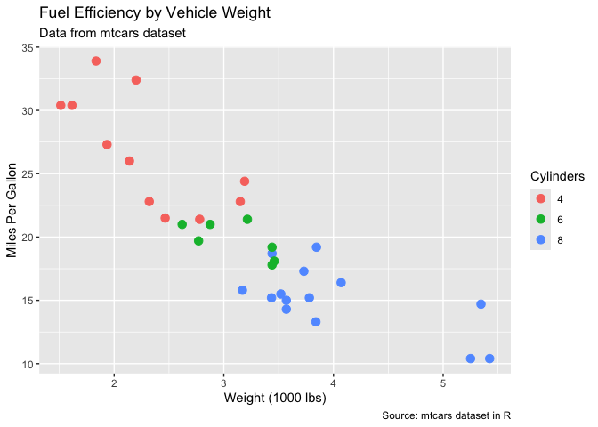
4.2 Adding Text and Annotations
ggplot(mtcars, aes(x = wt, y = mpg)) +
geom_point() +
geom_text(aes(label = rownames(mtcars)), size = 2, vjust = -0.5) +
labs(title = "MPG vs Weight with Car Names")
Use geom_label() for boxed labels or annotate() for single annotations:
ggplot(mtcars, aes(x = wt, y = mpg)) +
geom_point() +
annotate("text", x = 5, y = 30, label = "High efficiency, heavy cars", color = "red") +
annotate("rect", xmin = 4.5, xmax = 5.5, ymin = 28, ymax = 35, alpha = 0.2, fill = "red")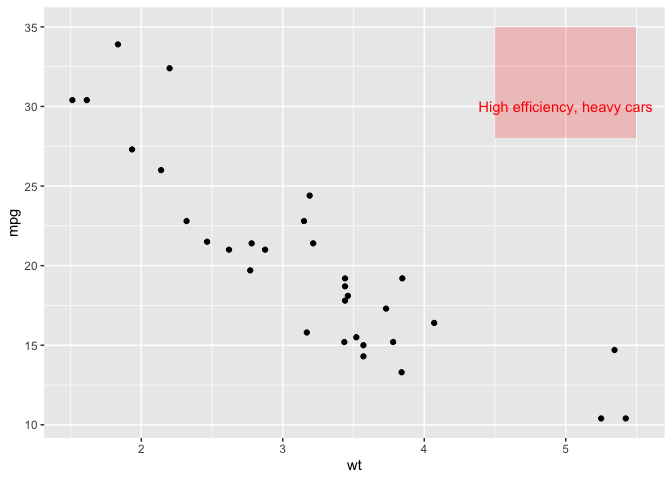
5. Scales and Axes
5.1 Customizing Continuous Scales
Use scale_x_continuous() and scale_y_continuous() to customize numeric axes.
ggplot(df, aes(x = China_Box_Office_Gross, y = US_Box_Office_Gross)) +
geom_point(size = 4, color = "steelblue") +
scale_x_continuous(
labels = scales::comma,
breaks = seq(300000000, 600000000, by = 50000000)
) +
scale_y_continuous(
labels = scales::dollar,
limits = c(0, 700000000)
) +
labs(
title = "Box Office Performance",
x = "China Gross",
y = "US Gross"
)
5.2 Customizing Discrete Scales
ggplot(mtcars, aes(x = factor(cyl), y = mpg, fill = factor(cyl))) +
geom_boxplot() +
scale_x_discrete(labels = c("4" = "Four", "6" = "Six", "8" = "Eight")) +
scale_fill_discrete(name = "Cylinders") +
labs(x = "Number of Cylinders")
5.3 Date Scales
When working with dates, use scale_x_date() to format axis labels.
# Create date data
df_dates <- df |>
mutate(Release_Date_Parsed = dmy(paste("01", Release_Date)))
ggplot(df_dates, aes(x = Release_Date_Parsed, y = Total_Worldwide_Gross)) +
geom_line(color = "steelblue", size = 1) +
geom_point(color = "steelblue", size = 3) +
scale_x_date(
date_breaks = "1 month",
date_labels = "%b %Y"
) +
scale_y_continuous(labels = scales::comma) +
labs(
title = "Worldwide Gross Over Time",
x = "Release Date",
y = "Total Worldwide Gross"
) +
theme(axis.text.x = element_text(angle = 45, hjust = 1))
5.4 Color Scales
| Function | Purpose |
|---|---|
scale_color_manual() |
Set colors manually |
scale_fill_manual() |
Set fill colors manually |
scale_color_brewer() |
Use ColorBrewer palettes |
scale_color_viridis_d() |
Viridis discrete palette |
scale_color_viridis_c() |
Viridis continuous palette |
scale_color_gradient() |
Continuous gradient |
scale_color_gradient2() |
Diverging gradient |
# Manual colors
ggplot(mtcars, aes(x = wt, y = mpg, color = factor(cyl))) +
geom_point(size = 3) +
scale_color_manual(values = c("red", "green", "blue"))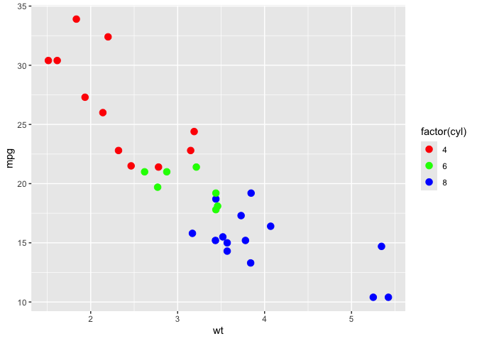
6. Themes
6.1 Built-in Themes
| Theme | Description |
|---|---|
theme_minimal() |
Clean, minimal design |
theme_classic() |
Classic with axes, no gridlines |
theme_light() |
Light background, subtle gridlines |
theme_dark() |
Dark background |
theme_bw() |
Black and white, good for printing |
theme_void() |
Empty, no axes or background |
p <- ggplot(mtcars, aes(x = wt, y = mpg, color = factor(cyl))) +
geom_point(size = 3) +
labs(title = "Theme Comparison")
# Compare themes
p + theme_minimal() + labs(subtitle = "theme_minimal()")
p + theme_classic() + labs(subtitle = "theme_classic()")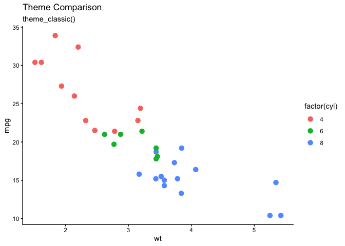
p + theme_bw() + labs(subtitle = "theme_bw()")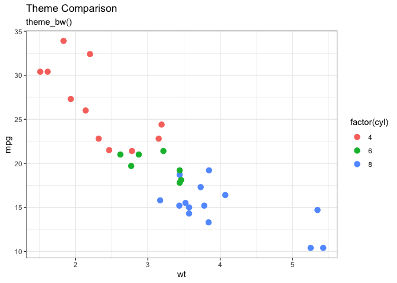
6.2 Customizing Theme Elements
Use theme() to customize individual elements:
| Element | Description |
|---|---|
plot.title |
Main title appearance |
plot.subtitle |
Subtitle appearance |
axis.title |
Axis label appearance |
axis.text |
Axis tick label appearance |
legend.position |
Legend location |
panel.grid |
Gridline appearance |
panel.background |
Plot area background |
ggplot(mtcars, aes(x = wt, y = mpg, color = factor(cyl))) +
geom_point(size = 4) +
labs(
title = "Fuel Efficiency by Vehicle Weight",
subtitle = "Custom themed plot",
x = "Weight (1000 lbs)",
y = "Miles Per Gallon",
color = "Cylinders"
) +
theme_light() +
theme(
plot.title = element_text(face = "bold", size = 16, hjust = 0.5, color = "darkblue"),
plot.subtitle = element_text(face = "italic", size = 12, hjust = 0.5),
axis.title = element_text(face = "bold", size = 12),
axis.text = element_text(size = 10),
legend.position = "top",
panel.grid.major = element_line(color = "gray90"),
panel.grid.minor = element_blank()
)
6.3 External Themes (ggthemes)
The ggthemes package provides additional themes:
install.packages("ggthemes")library(ggthemes)
# Economist theme
ggplot(mtcars, aes(x = wt, y = mpg, color = factor(cyl))) +
geom_point(size = 3) +
labs(title = "Economist Theme") +
theme_economist() +
scale_color_economist()
# Wall Street Journal theme
ggplot(mtcars, aes(x = wt, y = mpg, color = factor(cyl))) +
geom_point(size = 3) +
labs(title = "Wall Street Journal Theme") +
theme_wsj()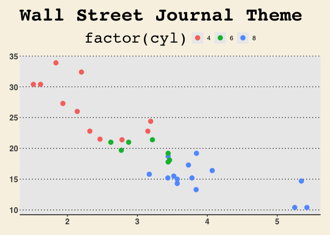
# Tufte theme (minimalist)
ggplot(mtcars, aes(x = wt, y = mpg, color = factor(cyl))) +
geom_point(size = 3) +
labs(title = "Tufte Theme") +
theme_tufte()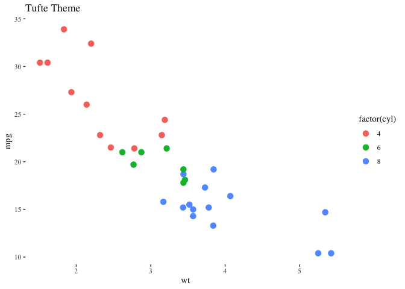
7. Facets
Facets split data into multiple panels by a variable.
7.1 facet_wrap()
Use facet_wrap() for a single grouping variable:
ggplot(mtcars, aes(x = wt, y = mpg)) +
geom_point(color = "steelblue", size = 2) +
facet_wrap(~ cyl) +
labs(title = "MPG vs Weight by Cylinders")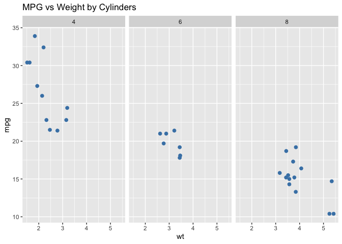
Control layout with ncol and nrow:
ggplot(mtcars, aes(x = wt, y = mpg, color = factor(cyl))) +
geom_point(size = 3) +
facet_wrap(~ cyl, ncol = 3) +
labs(title = "Faceted by Cylinders (3 columns)") +
theme(legend.position = "none")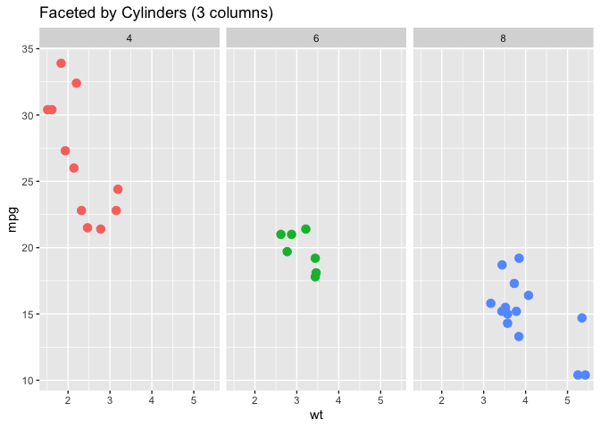
Free scales:
ggplot(mtcars, aes(x = wt, y = mpg)) +
geom_point(color = "steelblue") +
facet_wrap(~ gear, scales = "free") +
labs(title = "Faceted with Free Scales")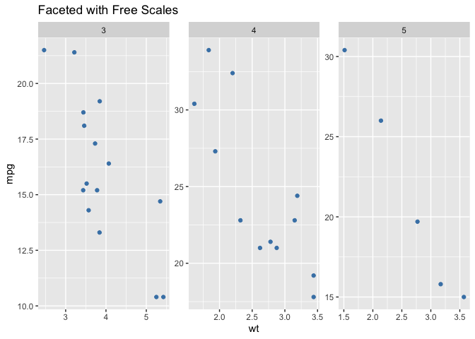
7.2 facet_grid()
Use facet_grid() for two grouping variables:
# Rows = cyl, Columns = gear
ggplot(mtcars, aes(x = wt, y = mpg, color = factor(cyl))) +
geom_point(size = 3) +
facet_grid(cyl ~ gear) +
labs(title = "Facet Grid: Cylinders × Gears") +
theme(legend.position = "none")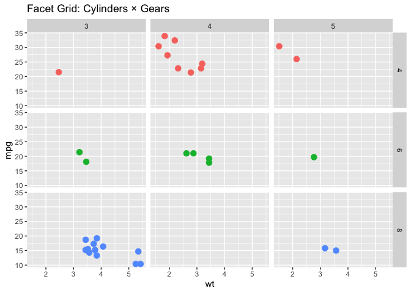
Facet by rows only:
ggplot(mtcars, aes(x = wt, y = mpg)) +
geom_point(color = "steelblue") +
facet_grid(cyl ~ .) +
labs(title = "Facet Grid: Rows by Cylinders")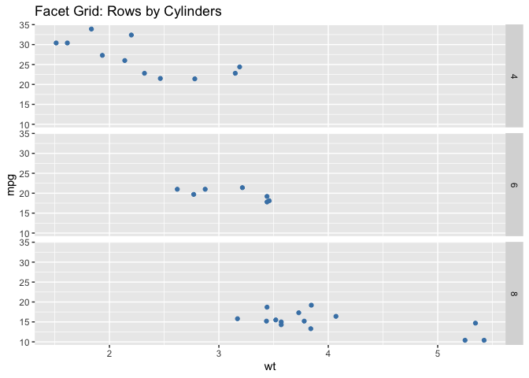
Facet by columns only:
ggplot(mtcars, aes(x = wt, y = mpg)) +
geom_point(color = "steelblue") +
facet_grid(. ~ gear) +
labs(title = "Facet Grid: Columns by Gears")
7.3 Customizing Facet Labels
ggplot(mtcars, aes(x = wt, y = mpg, color = factor(cyl))) +
geom_point(size = 3) +
facet_wrap(
~ cyl,
labeller = labeller(cyl = c("4" = "4 Cylinders", "6" = "6 Cylinders", "8" = "8 Cylinders"))
) +
labs(title = "Custom Facet Labels") +
theme(legend.position = "none")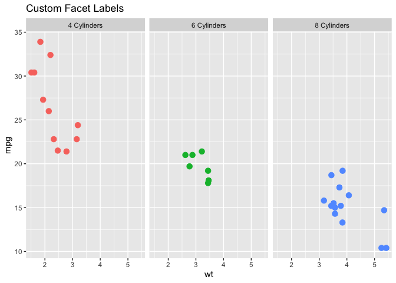
8. Color Palettes
8.1 Manual Colors
ggplot(mtcars, aes(x = factor(cyl), fill = factor(cyl))) +
geom_bar() +
scale_fill_manual(values = c("tomato", "steelblue", "forestgreen")) +
labs(title = "Manual Color Selection")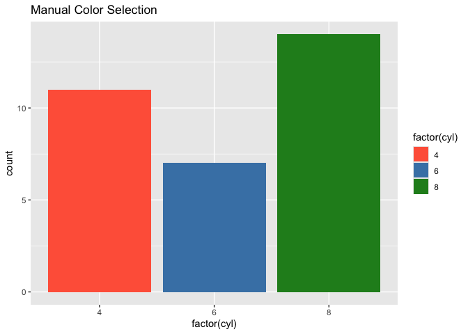
8.2 ColorBrewer
ColorBrewer provides color palettes designed for data visualization:
library(RColorBrewer)
display.brewer.all()
ggplot(mtcars, aes(x = factor(cyl), fill = factor(cyl))) +
geom_bar() +
scale_fill_brewer(palette = "Set2") +
labs(title = "ColorBrewer: Set2")
8.3 Viridis
Viridis palettes are colorblind-friendly and print well in grayscale:
ggplot(mtcars, aes(x = wt, y = mpg, color = hp)) +
geom_point(size = 4) +
scale_color_viridis_c() +
labs(title = "Viridis Continuous Scale")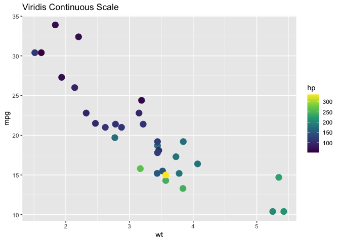
ggplot(mtcars, aes(x = factor(cyl), fill = factor(cyl))) +
geom_bar() +
scale_fill_viridis_d() +
labs(title = "Viridis Discrete Scale")
8.4 Fun Palettes
wesanderson:
install.packages("wesanderson")library(wesanderson)
# See available palettes
names(wes_palettes)## [1] "BottleRocket1" "BottleRocket2" "Rushmore1"
## [4] "Rushmore" "Royal1" "Royal2"
## [7] "Zissou1" "Zissou1Continuous" "Darjeeling1"
## [10] "Darjeeling2" "Chevalier1" "FantasticFox1"
## [13] "Moonrise1" "Moonrise2" "Moonrise3"
## [16] "Cavalcanti1" "GrandBudapest1" "GrandBudapest2"
## [19] "IsleofDogs1" "IsleofDogs2" "FrenchDispatch"
## [22] "AsteroidCity1" "AsteroidCity2" "AsteroidCity3"ggplot(mtcars, aes(x = factor(cyl), fill = factor(cyl))) +
geom_bar() +
scale_fill_manual(values = wes_palette("GrandBudapest1", n = 3)) +
labs(title = "Wes Anderson: Grand Budapest")
NatParksPalettes:
install.packages("NatParksPalettes")library(NatParksPalettes)
# See available palettes
names(NatParksPalettes)## [1] "Acadia" "Arches" "Arches2" "Banff" "BryceCanyon"
## [6] "CapitolReef" "Charmonix" "CraterLake" "Cuyahoga" "DeathValley"
## [11] "Denali" "Everglades" "Glacier" "GrandCanyon" "Halekala"
## [16] "IguazuFalls" "KingsCanyon" "LakeNakuru" "Olympic" "Redwood"
## [21] "RockyMtn" "Saguaro" "SmokyMtns" "SouthDowns" "Torres"
## [26] "Triglav" "WindCave" "Volcanoes" "Yellowstone" "Yosemite"ggplot(mtcars, aes(x = factor(cyl), fill = factor(cyl))) +
geom_bar() +
scale_fill_manual(values = natparks.pals("Yellowstone", n = 3)) +
labs(title = "National Parks: Yellowstone")
Class Exercise: Comprehensive Visualization
Using the iris dataset, create a publication-ready visualization:
- Create a scatter plot of
Sepal.LengthvsSepal.Width, colored bySpecies. - Add appropriate labels (title, subtitle, axis labels, caption).
- Use a custom color palette (try wesanderson or ColorBrewer).
- Apply a theme (try
theme_minimal()ortheme_classic()). - Customize the theme with:
- Bold, centered title
- Legend at the bottom
- Custom axis text size
- Create a faceted version by
Species.
# Starter code
ggplot(iris, aes(x = Sepal.Length, y = Sepal.Width, color = Species)) +
geom_point(size = 3) +
# Add your customizations here
labs(
title = "...",
subtitle = "...",
x = "...",
y = "...",
caption = "..."
)Lecture 3 Cheat Sheet
| Topic | Key Points |
|---|---|
| ggplot Structure | ggplot(data, aes()) + geom_*() + ... - build plots layer by layer |
| Common Geoms | geom_point(): scatter; geom_line(): lines; geom_bar()/geom_col(): bars; geom_histogram(): distribution; geom_boxplot(): box plots |
| Mapping vs Setting | Inside aes(): map variable to aesthetic; Outside aes(): set fixed value |
| Aesthetics | color: outlines/lines; fill: interior; alpha: transparency; size: point/line size; shape: point shape; linetype: line style |
| Labels | labs(title, subtitle, x, y, color, fill, caption) |
| Scales | scale_x_continuous(), scale_y_continuous(), scale_x_date(), scale_color_manual(), scale_fill_brewer() |
| Themes | theme_minimal(), theme_classic(), theme_bw(), theme_void(); Customize with theme() |
| Facets | facet_wrap(~ var): single variable; facet_grid(row ~ col): two variables |
| Color Palettes | Manual: scale_*_manual(values = c(...)); Brewer: scale_*_brewer(palette = "..."); Viridis: scale_*_viridis_d() |
| ggthemes | theme_economist(), theme_wsj(), theme_tufte() for publication-ready styles |